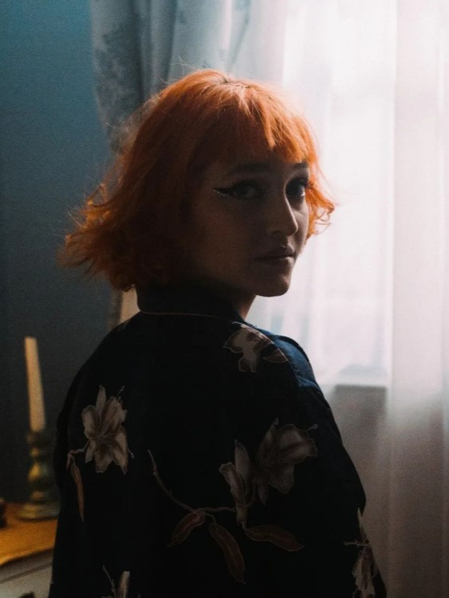
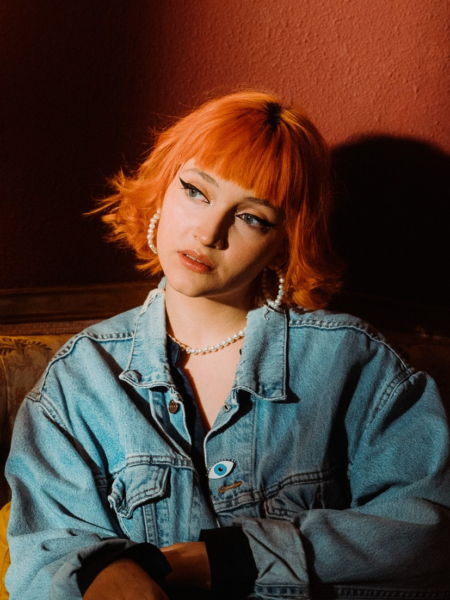

Prima Dragoste


The collaboration with Prima Dragoste is one of my best challenges. Usually working with dark colours, black and grey, I now have the opportunity to explore and play with whites and tans, with ligher or desaturated colours, but also reds. Her eclectic perspective offers the perfect counter-balance Nidle needs to create garments for her.
Alexandra Cebotar has a repeating "bride" motif in her songs, setting white as the first colour option when it comes to stepping on stage.